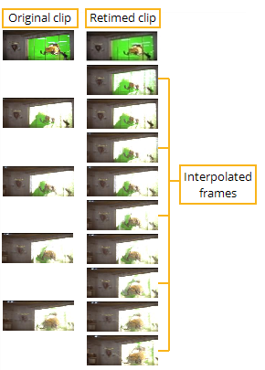
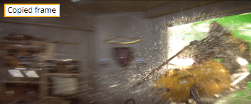
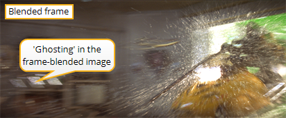
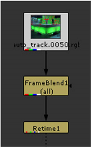

减缓剪辑的时间扭曲需要创建额外的，或者 内插 ,框架。例如，假设您希望将碰撞的速度 (如下面的剪辑所示) 降低 2 倍。这需要为剪辑中的每个现有帧创建一个内插帧。
|
 |
| 内插帧。 |
最简单的方法 Nuke 插值是复制现有帧并增加剪辑的长度 -- 这是插值的默认方法。然而，这种方法可以创建抖动的回放，尤其是当图像描述非常快速的运动，并且剪辑被重新计时到比原来的长度长得多的时候。对于这种情况, Nuke 为平滑插入帧提供不同的节点。
FrameBlend 节点通过生成之前和之后的帧的附加复合来插入帧，而不是仅仅在现有帧之间创建副本。
以下是帧复制和帧混合插值之间的差异示例。在下图的第一帧中，您会看到上一帧的副本。在第二帧中，您看到通过混合前一帧和后续帧生成的新图像。
|
  |
| 帧复制与帧混合插值。 |
后一种方法在所有快速移动的特征 (例如窗框和桌子上的页面) 周围创建 “重影”。当作为静止帧的一部分观看时，这可能看起来很奇怪，但在实际播放期间有助于更平滑的运动。
您可以通过操纵启用帧混合 快门 重新计时节点的值。较高的快门值会产生更多的帧混合。或者，可以在要影响的临时效果之前插入帧混合节点。下图显示了与重定时节点进行帧混合的示例。
| 1。 | 选择 时间> 帧混合 从工具栏中。 |
记得把它放在你想影响的时间效果的上游。

| 2. | 输入数帧混合的 帧数 字段。 |
or
检查 自定义 框，然后输入要混合的开始和结束帧。要将输入范围用作自定义帧范围，请单击 输入范围 .
| 3. | 如有必要，请检查 前景磨砂 并选择通道以限制混合效果。 |
的 输出图像计数到 选项将浮点 alpha 图像保存到您指定的通道; 结果指示影响遮罩每个像素的图像数量。要使 alpha 标准化，请将数字 1 除以平均的帧数，然后将 alpha 通道乘以此结果。您也可以使用此哑光的逆来进行额外的剥皮。
|
|